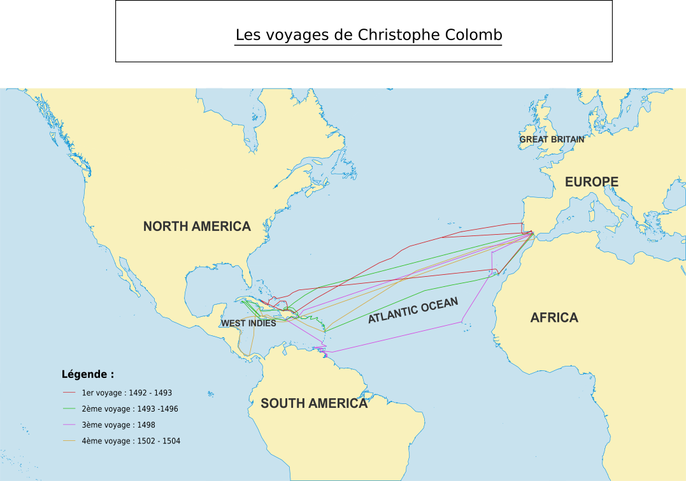
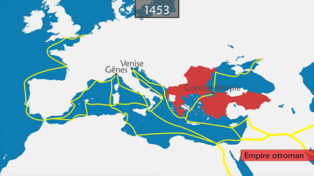
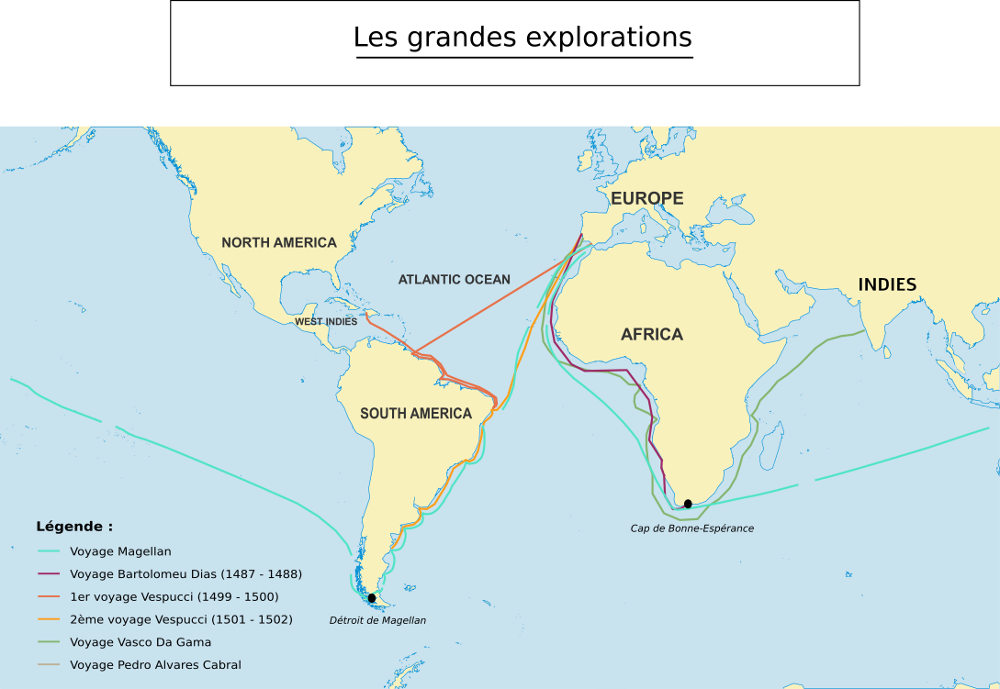
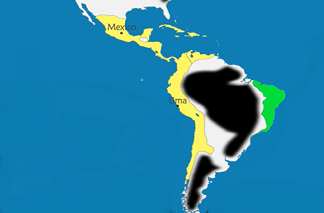
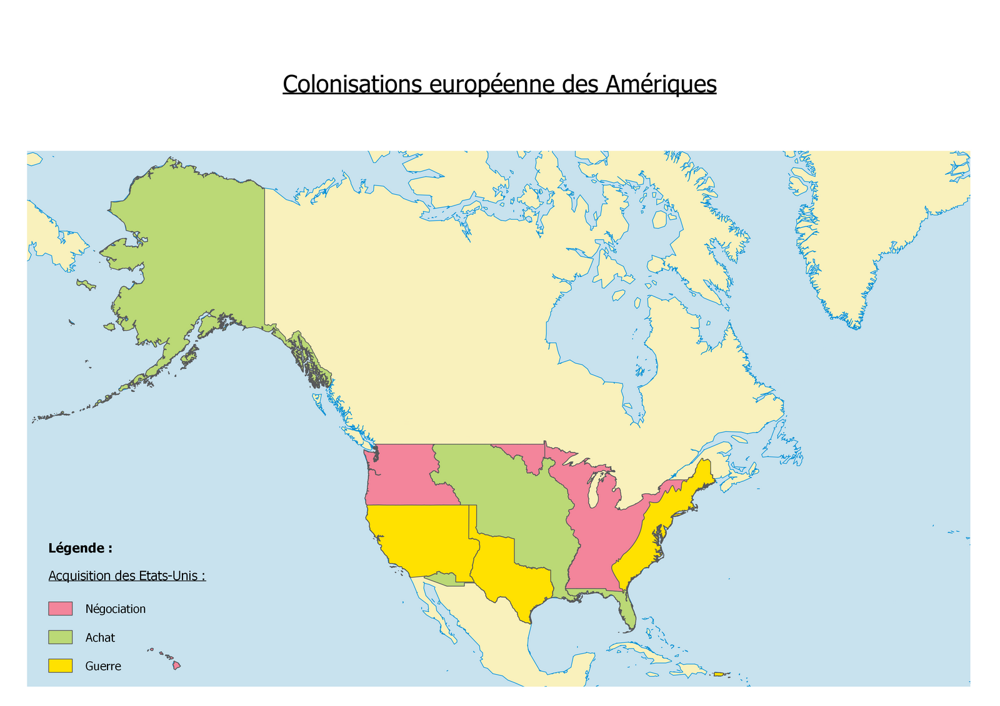
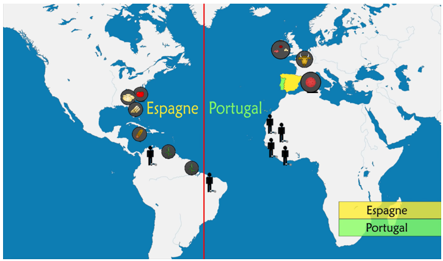
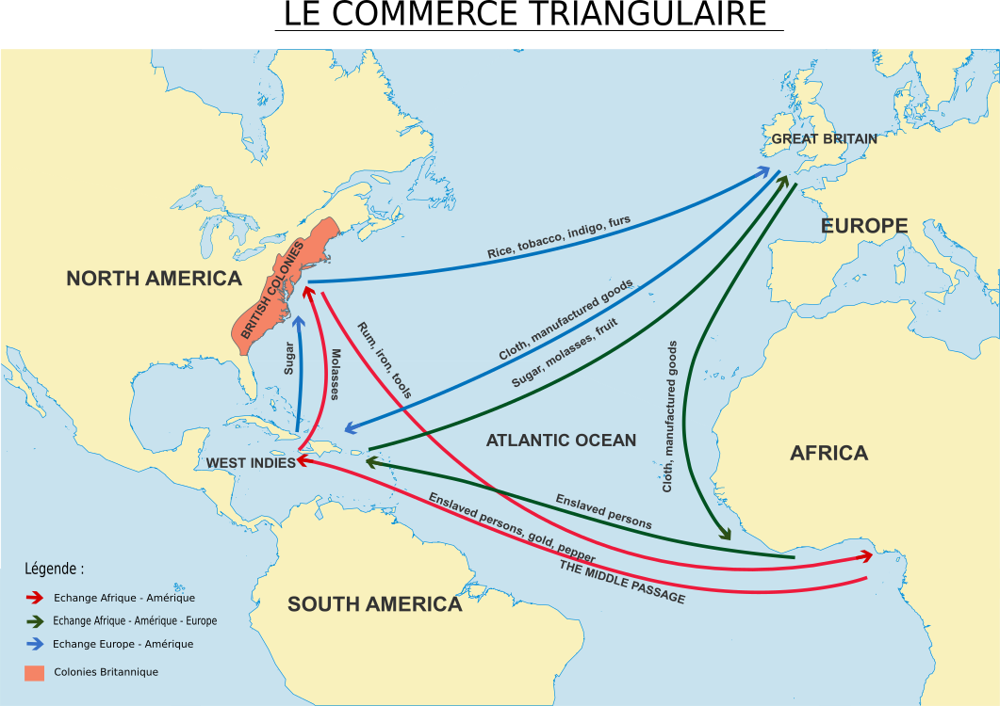

1500 : La découverte de l'Amérique
Les découvertes de Christophe Colomb
Christophe Colomb un marin génois propose dès 1484 d’explorer la « route de l’Ouest » avec pour
objectif d’atteindre le continent asiatique et notamment l’Inde. En 1492, Colomb part avec le soutient de l'Epsagne et peu d’hommes pour arriver sur l’île des Bahamas, le Nouveau Monde est découvert.
C’est
ainsi que Christophe Colomb appelle l’Amérique connue de nos jours.

@FOUET Anaïs 2022
A ce moment-là Colomb pense être arrivé sur le continent
asiatique, pensant alors explorer l’océan Indien il explore en réalité la mer
des Antilles, touchant notamment Cuba. Il rentre en 1493 rapportant avec lui
quelques ressources trouvées comme des pépites d’or, des épices, du coton ou
encore du tabac.
Des ressources inconnus sur le continent Européen, ce qui
laissa penser à l’Espagne que le Nouveau Monde recelaient d’immenses richesses
et elle devait donc s’assurer l’exclusivité du territoire.
Dès septembre 1493 Colomb repart mais cette fois avec
une plus grande flotte et fini par découvrir la Dominique, La Guadeloupe et
Porto Rico. Colomb décide de rester 3 ans aux Antilles toujours persuadé d’être
sur le continent asiatique, et décide de rentrer en 1496.
Christophe Colomb effectuera 2 autres voyages entre 1498 et
1504, mais au même moment on apprend en Espagne que l’explorateur Vasco de Gama
est lui réellement arrivé aux Indes, traitant ainsi Colomb d’imposteur.
Il
repartit cependant pour un dernier voyage mais les ressources qu’il rapporta
étaient identiques à celles rapporté des Indes.
Prise de Constantinople et découvertes de nouvelles routes

La prise de Constantinople par les turcs en 1453 marque un
tournant dans les explorations maritimes, en effet Constantinople était une
ville de passage entre la mer Noire, la mer de Marmara et jusqu’à la mer
Méditerranée.
Elle était située à la frontière entre l’Orient et l’Occident
pouvant ainsi profiter des richesses à la fois de l’Asie, de l’Afrique et de
l’Europe. Après la chute de Constantinople, les occidentaux n’avaient plus
accès au détroit de Bosphore et les explorateurs devaient donc chercher une
nouvelle route maritime vers les Indes.

@FOUET Anaïs 2022
La découverte du Cap de Bonne-Espérance lors de l’expédition
de Bortholomeu Dias en 1488 situé à la pointe du
continent africain, permet alors un passage vers l’Est et donc vers la route
des Indes. C’est grâce à se passage que Vasco de Gama est parvenu aux Indes 10
ans plus tard.
Vespucci fût l’un des premiers
successeurs de Colomb à faire connaître le Nouveau Monde à l’Europe avec son
expédition de 1501, il s’aventura au sud où il toucha l’actuel Venezuela. Le
mot « America » apparaît alors sur les cartes en l’honneur de
l’explorateur Amerigo Vespucci. L’exploration de Magellan vers 1520 va permettre de connaître
en quasi-totalité les côtes de l’Amérique du Sud, il découvre
par la même occasion le détroit qui désormais porte son nom « Le détroit
de Magellan » au sud du continent américain.
La colonisation

Les grandes découvertes ont entraîné
des conséquences tant pour les Européens que pour les peuples autochtones. Les
européens découvrent des cultures différentes, des larges espaces et des
ressources alors inconnus jusque-là.
Commence alors la colonisation européenne
des Amérique, les portugais et les
espagnols se sont partagés les terres pour pouvoir s’emparer des ressources
nouvelles comme l’or, les épices, le coton, le tabac ou encore le sucre.
De part de nombreuses explorations,
la couronne Espagnole c’est emparée d’un large territoire comportant le
Mexique, le Pérou et le Chili actuel. Du côté du Portugal, celui-ci dispose
d’un petit territoire à l’Est du continent. L’actuel Brésil sera découvert par
l’expansion de la colonie du Portugal.

@FOUET Anaïs 2022
L’Amérique centrale fût colonisée
quelques temps après par les anglais et français principalement soit par des
guerres, soit par des négociations ou même par un achat direct du territoire.
La colonisation déciment les peuples
autochtones, du fait que les colons apportent avec eux des maladies (la variole) du
continent européen qui sont alors inconnues par les peuples du Nouveau Monde.
Très vite les européens se mirent à organiser un trafic
maritime régulier entre l'Amérique et l’Europe, afin de pouvoir transférer les
richesses du Nouveau Monde.
Le commerce triangulaire
La possibilité de cultiver des ressources qui sont impossibles à cultiver en Europe
(tabac, sucre, coton…) faisait rêver les européens, ainsi les colons ont
rapidement utilisé les autochtones comme une main-d’œuvre gratuite.
Les pays
d’Europe envoyent des ressources sans valeur aux pays d’Afrique (comme du
bétails ou des graines), et en contrepartie ils prennent les populations
africaines comme mains d’œuvres pour les cultures (champs de cotons) du Nouveau
Monde.

On assiste à la mise en place du commerce triangulaire.
L’Europe exporte vers ses
colonies des céréales, des armes, des objets, des esclaves, et importe depuis
le Nouveau Monde des ressources telles que le sucre, du coton, du tabac et des
métaux rares. Le commerce triangulaire qui se met en place à partir du 16ème
siècle apparaît emblématique d'une mondialisation dominée par l'Europe, pour le
meilleur (diffusion des idées, des innovations, division internationale du
travail...) et pour le pire (colonisation, oppression des peuples...).

@FOUET Anaïs 2022
Les Européens ne retirent que des avantages de ces grandes
découvertes alors que les autochtones en subissent toutes les conséquences
négatives.